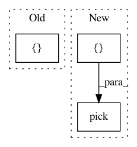

da21952253a0ea6797faa7c59a3b6e9f117b58a6,slm_lab/agent/algorithm/dqn.py,VanillaDQN,init_algo_params,#VanillaDQN#,58
Before Change
algorithm_spec = self.agent.spec["algorithm"]
self.action_policy = act_fns[algorithm_spec["action_policy"]]
self.action_policy_update = act_update_fns[algorithm_spec["action_policy_update"]]
util.set_attr(self, _.pick(algorithm_spec, [
// explore_var is epsilon, tau or etc. depending on the action policy
// these control the trade off between exploration and exploitaton
"explore_var_start", "explore_var_end", "explore_anneal_epi",
"gamma", // the discount factor
"training_min_timestep", // how long before starting training
"training_frequency", // how often to train (once a few timesteps)
"training_epoch", // how many batches to train each time
"training_iters_per_batch", // how many times to train each batch
]))
self.nanflat_explore_var_a = [
self.explore_var_start] * self.agent.body_num
After Change
"training_epoch", // how many batches to train each time
"training_iters_per_batch", // how many times to train each batch
]))
util.set_attr(self, _.pick(net_spec, [
"decay_lr", "decay_lr_timestep", "start_decay_lr_timestep",
]))
self.nanflat_explore_var_a = [
self.explore_var_start] * self.agent.body_num
In pattern: SUPERPATTERN
Frequency: 3
Non-data size: 3
Instances
Project Name: kengz/SLM-Lab
Commit Name: da21952253a0ea6797faa7c59a3b6e9f117b58a6
Time: 2018-01-29
Author: lgraesser@users.noreply.github.com
File Name: slm_lab/agent/algorithm/dqn.py
Class Name: VanillaDQN
Method Name: init_algo_params
Project Name: mne-tools/mne-python
Commit Name: 1b9d2228bc40f817ef1765686bc2ec6e81079d13
Time: 2020-12-17
Author: larson.eric.d@gmail.com
File Name: mne/preprocessing/tests/test_ssp.py
Class Name:
Method Name: test_compute_proj_ctf
Project Name: mne-tools/mne-python
Commit Name: 1b9d2228bc40f817ef1765686bc2ec6e81079d13
Time: 2020-12-17
Author: larson.eric.d@gmail.com
File Name: mne/preprocessing/tests/test_ecg.py
Class Name:
Method Name: test_find_ecg